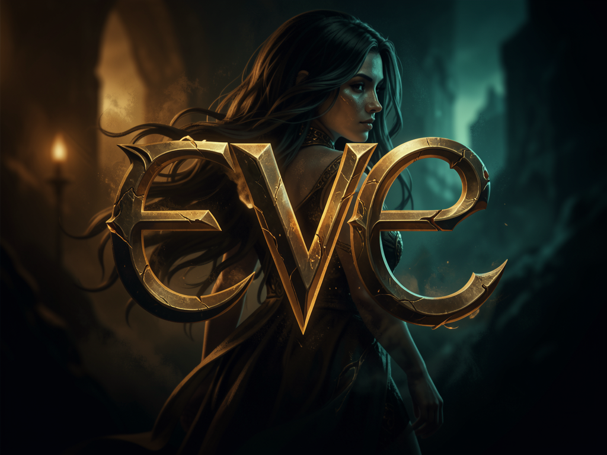

eve é um framework filesystem-first para agentes de IA duráveis: instruções, tools, skills, canais e schedules são todos arquivos. Você escreve a pasta, o eve compila e roda.

As capacidades centrais do agente vivem em locais convencionais no disco, então os projetos ficam mais fáceis de inspecionar, estender e operar. Sem mágica escondida — o que você vê na pasta é o agente.
Instruções (instructions.md), tools, skills, canais e schedules são arquivos numa pasta agent/. O nome vem do caminho — sem config redundante.
Cada tool é uma função TypeScript com schema Zod. O modelo chama; você controla entrada e saída com tipos de verdade.
Canais (HTTP, Slack, Discord), subagentes e cron schedules já fazem parte do modelo. Escala do exemplo mínimo ao agente de produção.
Você descreve o agente como arquivos; o eve lê a convenção da pasta, compila e sobe a UI de terminal interativa (ou o canal que você configurar).
É um projeto Node/TypeScript. Você só precisa do Node e de uma credencial do provedor de modelo que for usar (ex.: Anthropic).
Node 18+ com npm (ou pnpm). O init instala as dependências.
# conferir versão
node -vChave do provedor escolhido em agent.ts (ex.: anthropic/claude-sonnet-5).
# variável de ambiente
export ANTHROPIC_API_KEY=...O scaffold inicializa um repositório Git automaticamente pra você versionar o agente.
# já vem no init
git --versionComandos reais do eve. Em poucos minutos você tem um agente com uma tool funcionando.
Gera a pasta my-agent/, instala dependências, inicializa Git e abre a UI de terminal.
npx eve@latest init my-agent # ou "init ." pra adicionar a um projeto existente
O system prompt sempre-ativo vive em agent/instructions.md.
# agent/instructions.md
You are a concise weather demo assistant. Tell users that the weather data is mocked.
Crie agent/tools/get_weather.ts — o nome da tool vem do caminho do arquivo.
import { defineTool } from "eve/tools"; import { z } from "zod"; export default defineTool({ description: "Return mock weather data for a city.", inputSchema: z.object({ city: z.string().min(1) }), async execute({ city }) { return { city, condition: "Sunny", temperatureF: 72 }; }, });
Configure o modelo em agent/agent.ts.
import { defineAgent } from "eve"; export default defineAgent({ model: "anthropic/claude-sonnet-5", });
Sobe o agente de novo com o scaffold. A partir daí, adicione human-in-the-loop, subagentes e schedules conforme precisar.
npm run dev # agente no ar com sua tool
Cada capacidade em um local convencional. Pastas opcionais entram só quando você precisa — o mínimo é instructions.md.
my-agent/
└── agent/
├── agent.ts # modelo e config de runtime (opcional)
├── instructions.md # system prompt sempre-ativo (obrigatório)
├── tools/ # funções tipadas que o modelo chama
│ └── get_weather.ts
├── skills/ # procedimentos carregados sob demanda
│ └── plan_a_trip.md
├── channels/ # canais de mensagem (HTTP, Slack, Discord)
│ └── slack.ts
└── schedules/ # cron jobs recorrentes
└── weekly_recap.ts
Projeto open source da Vercel (licença MIT), atualmente em beta — APIs e comportamento podem mudar antes do GA. Este repo é um fork/estudo no ecossistema INEMA.
eve traz a documentação completa — agentes de código conseguem ler localmente de node_modules/eve/docs.